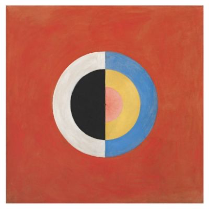

Exploration of Digital Art forms, focusing on the interrelationship of the digital technology on art and culture. The goal of the course is to weave technical skills into creative vision.
 Figure 1 Swan 17 - Hilma af Klint
Hilma af Klint (Swedish pronunciation: [ˈhɪ̂lːma ˈɑːv ˈklɪnːt]; October 26, 1862 – October 21, 1944) was a Swedishartist and mystic whose paintings were, to the current art community, the first Western abstract art.[1] A considerable body of her abstract work predates the first purely abstract compositions by Kandinsky.[2] She belonged to a group called "The Five", a circle of women who shared her belief in the importance of trying to make contact with what she called the "High Masters"—often by way of séances.[3] Her paintings, which sometimes resemble diagrams, were a visual representation of complex spiritual ideas.
Perhaps you are wondering why artists copy paintings in museums, as I am doing. The answer is to study, to learn, and to find inspiration from the great masters of the past. Copying directly from works of art gives the artists insight into the creative process — insights which cannot be learned from any other source. [Gerald King]Recreate one of the abstract paintings from this Pinterest board (or something similar):
The Due Date for this workshop is the end of class period, September 3, 2020. In order to turn this in properly, please provide a link to your sketches through the web editor where your work can be checked.